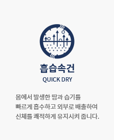
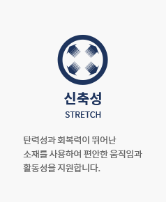
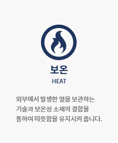
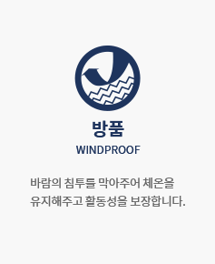
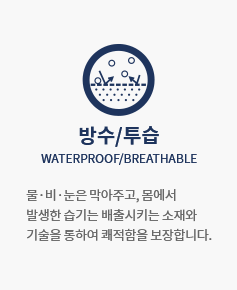
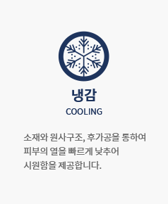
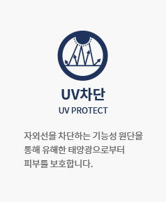
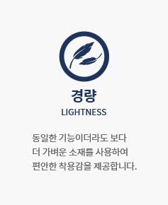
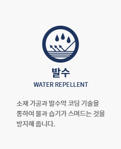
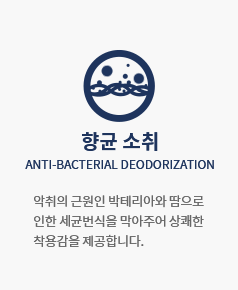

브랜드
Home브랜드

- 'Discoverer를 위한 테크놀로지'라는 철학을 바탕으로 (1985년부터) 다양한 자연 환경부터 대도시까지 지구 곳곳을
탐험하며 쌓은 Discoverer만의 노하우를 테크놀로지에 반영하여 환경적인 제약과 기후 변화에 방해 받지 않고
새로움을 향한 발견과 테크니컬 라이프 스타일의 즐거움을 온전히 누리게 하는 것이 Discoverer가 지향하는
테크놀로지의 핵심입니다.
- SMART
ULTIMATE
REFINED
EVLOLUTON - 테크니컬 라이프스타일에 가장 적합한 기술을 제공하여 스마트한 라이프스타일 테크놀로지를 제공합니다.
여러 기술과 기능을 사용환경과 용도에 맞추어 최적의 조합으로 적용하여 최대의 시너지를 내도록 합니다.
단순희 기능적인 부분만 만족시키는 것이 아니라, 트렌디하고 세련된 스타일과 기능을 적절하게 조합합니다.
테크니컬 라이프스타일에 가장 적합한 테크놀로지를 끊임없이 개발하고 혁신하여 진화된 기술을 제공합니다.
- ABOUT
S.U.R.E
DEFINITION - 테크니컬 라이프스타일에 필요한 테크놀로지를 10가지 군으로 분류하여 다양한 용도와 환경, 필요에 맞도록 적용하고
결합하여 최대의 시너지를 낼 수 있도록 만든 디스커버리만의 테크놀로지 시스템입니다.
- 
- 
- 
- 
- 
- 
- 
- 
- 
- 